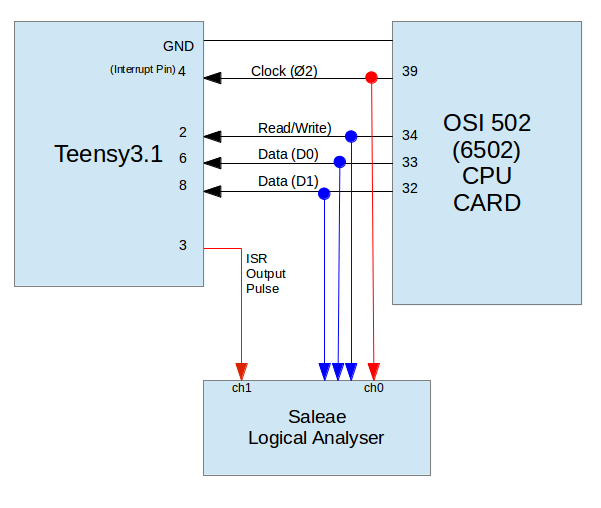
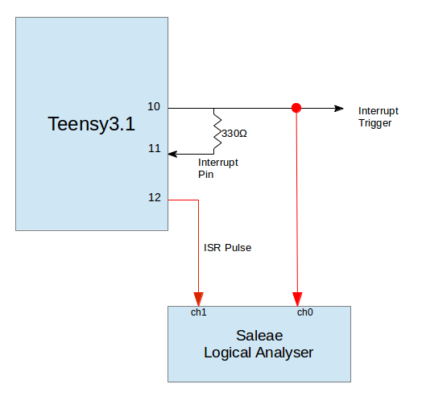
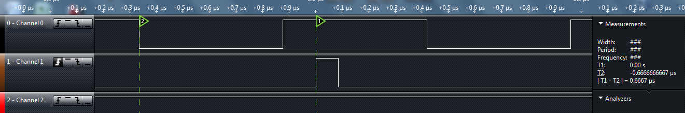
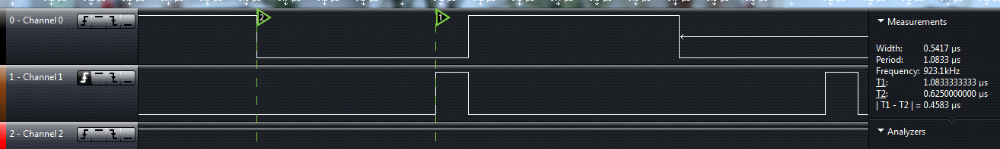
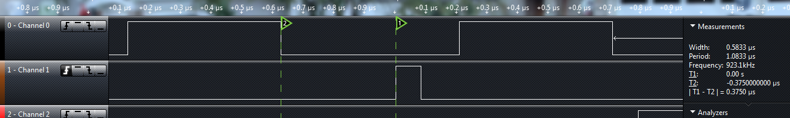

I am in the process of fixing a vintage Ohio Scientific Computer. I could really use a 32 bit logic analyser to record and display the execution of the programs. With more time than money I decided to try out a DIY Logic Analyser using the Teensy.
My first inclination was to use a synchronous approach with the 6502s clock driving an interrupts on the Teensy. During each interrupt the Teensy would read and save the address, data, and control bits until it filled a memory buffer.
To make this approach work I needed to process interrupt on the Teensy at 1MHz. In addtion to the time needed to execute the Interrupt Service Routine (ISR), the time to enter and exit the ISR (interrupt latency) needed to be considered. When am interrupt occurs the ARM processor stores state, the Teensy core library interrupt handlers run and then the ISR starts to run.
I ran two tests to better understand the latency on interrupts. The first was a semi-real-world test with the 6502s clock signal was connected to the Teensy interrupt pin. The 6502 clock would drive interrupts every 1 micro second. The second test was a loop back test where one pin on the Teensy was used to interrupted itself on another pin. I have a small Saleae logic analyser that could monitor these the input/output lines and record timings.
BTW: I am using Arduino-1.6.1 and Teensy-1.22 software on a Teensy 3.1 And, I am using Makefiles so my code is not exactly Arduino Sketch compatable.
Test Set-up #1 -- external clock driving Teensy Interrupt

With Test #1 the 6502s clock was connected to the Teensy interrupt (pin 4) and the ISR would toggle on/off an output (pin 3). The clock and pulse pins were recorded using the Saleae Logical Analyser. The Read/Write and Data line were just used to ensure the 6502 was alive and running.
Test Set-up #2 -- loopback trigger driving Teensy Interrupt

With this setup the main routine would bring pin 10 high to trigger and interrupt on pin 11. The ISR would bring the trigger pin low and pulse the output pin 12 on/off. Timing was recorded by the Logic Analyser.
For each test setup I ran four different tests:
In the "hacked" version I replaced the standard interrupt handler with my own ISR that toggled an output pin on/off.
The clock test only allowed monitoring of the entry into the ISR. But it provides a "real world" simulation of trying to keep up to the 6502 processor.
The loopback test allowed monitoring of the entry and exit from the ISR.
After all this testing my conclusion is that I am going to try an asynchronous approach and poll the I/O pins. There is too much overhead in switching in/out of an interrupt for my application.
John Lockett
2015/06/12
This section provides a few more details on the code and some screenshots of the test results.
The ISR is very simple turn on pin, NOP for a few cycles, turn off pin.
void isr_clk(void)
{
digitalWriteFast(ISR_PIN, HIGH);
__asm__ __volatile__("NOP");
__asm__ __volatile__("NOP");
__asm__ __volatile__("NOP");
__asm__ __volatile__("NOP");
__asm__ __volatile__("NOP");
digitalWriteFast(ISR_PIN, LOW);
}I have a few NOPs in the ISR to make the toggle on/off of the pin long enough for nice display on the logic analyser. My Saleae has a max speed is 24MHz and with no NOPs it showed the pulse width as being 41.7nsec (the minimum it can calculate).
As I increased the number of NOPs the pulse got wider:
A NOP takes one CPU cycle so at 96MHz, each NOPs should increase execution time by 10nsec. The measurements are pretty close to this.
My interrupt was configured to trigger on the falling edge of the clock (Channel 0). Channel 1 is the ISR toggling ON/OFF the output line.
With a standard library "out of the box" solution the time from falling edge of external clock to rising edge of ISR output is 667nanosec.
So, 670nsec to start the ISR and couple hundred to exit (min 120nsec) does not leave much time for my ISR to process data.
Standard Library, running from Flash Memory = 667nsec 
12% improvement by moving the ISR into RAM.
Standard Library, running from RAM Memory = 583nsec
clock fast
The core library contains a interrupt service routine in the pin_teensy.c file. There is one routine for each I/O port (A,B,C,D,E). Each routing figures out which pin caused the interrupt and then calls the service routine that was previously set up using "attachInterrupt".
To improve the ISR response time I replaced the PortA routine with my own ISR routine. This reduced the overhead; no decisions to make and no functions to call.
Standard Port A ISR:
static void porta_interrupt(void)
{
uint32_t isfr = PORTA_ISFR;
PORTA_ISFR = isfr;
if ((isfr & CORE_PIN3_BITMASK) && intFunc[3]) intFunc[3]();
if ((isfr & CORE_PIN4_BITMASK) && intFunc[4]) intFunc[4]();
if ((isfr & CORE_PIN24_BITMASK) && intFunc[24]) intFunc[24]();
if ((isfr & CORE_PIN33_BITMASK) && intFunc[33]) intFunc[33]();
}My "hacked" Interrupt Service Routine:
static void porta_interrupt(void)
{
uint32_t isfr = PORTA_ISFR;
PORTA_ISFR = isfr;
// 2015/06/10
// Hacked Teensy ISR for fast interrupt response
//
#define ISR_PIN 3
digitalWriteFast(ISR_PIN, HIGH);
__asm__ __volatile__("NOP");
__asm__ __volatile__("NOP");
__asm__ __volatile__("NOP");
__asm__ __volatile__("NOP");
__asm__ __volatile__("NOP");
digitalWriteFast(ISR_PIN, LOW);
}The assembler for this ISR was fairly tight with a total of 14 instructions.
4dc <porta_interrupt>:
4dc: 4b07 ldr r3, [pc, #28] ; (4fc <porta_interrupt+0x20>)
4de: 681a ldr r2, [r3, #0]
4e0: 601a str r2, [r3, #0]
4e2: f44f 5380 mov.w r3, #4096 ; 0x1000
4e6: 4a06 ldr r2, [pc, #24] ; (500 <porta_interrupt+0x24>)
4e8: 6013 str r3, [r2, #0]
4ea: bf00 nop
4ec: bf00 nop
4ee: bf00 nop
4f0: bf00 nop
4f2: bf00 nop
4f4: 3204 adds r2, #4
4f6: 6013 str r3, [r2, #0]
4f8: 4770 bx lr
4fa: bf00 nop
4fc: 400490a0 .word 0x400490a0
500: 400ff004 .word 0x400ff004By moving the ISR into the core library there is a 32% improvement over the standard out-of-the-box solution.
Hacked Library, running from Flash Memory = 453nsec 
The last test with the ISR inside the core library and using FASTRUN to move it into memory resulted on a 44% improvment in latency.
Hacked Library, running from RAM Memory = 375nsec

The code for loop back pin test is very similar to the clock test. The main function simple turns on the trigger pin. The ISR turns it off and main will turn in on again. Again, the ISR has a few NOP to give me a nice display on the Logic Analyser.
int main(void)
{
setup();
while(1) {
digitalWriteFast(TRIGGER_PIN, HIGH);
} // while
} // main
// *************************************************
FASTRUN void isr_clk(void)
{
digitalWriteFast(ISR_PIN, HIGH);
digitalWriteFast(TRIGGER_PIN, LOW);
__asm__ __volatile("NOP");
__asm__ __volatile("NOP");
__asm__ __volatile("NOP");
__asm__ __volatile("NOP");
__asm__ __volatile("NOP");
digitalWriteFast(ISR_PIN, LOW);
}| Source Code |
|---|
| lockettnb at github |